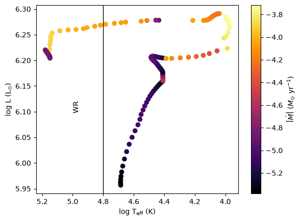
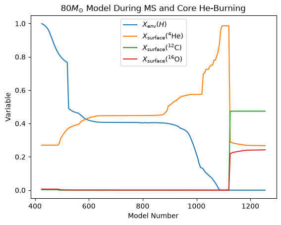

In-Class Assignment 15#
Note due for credit, in-class participation only
Wolf-Rayet Stars#
Learning Objectives#
explore HR properties of WR stars
classify subclasses of WR stars
import numpy as np
import matplotlib.pyplot as plt
import pandas as pd
a. - Mass loss evolution of WR stars#
Download the following model files locally. These data were produced using the 80m_zams_to_cc test suite. This model was only evolved to core He-depletion.
\(80 M_{\odot}\): 80m_zams_to_cc_history.data;
Individually/with the person next to you:#
Using the \(80M_{\odot}\) MESA history dataset:
Plot an HR diagram of the model as a scatter plot, but color the data according to the
log_abs_mdotvalue at a given HR data pair.Label a vertical line of log effective temperature where the star becomes a WR star and label that region.
# load data and see which variables are available
wr_80m_history = pd.read_csv('data/80m_zams_to_cc_history.data',sep=r'\s+',header=4)
list(wr_80m_history)
#wr_80m_history.head(10)
['model_number',
'num_zones',
'star_age',
'star_age_sec',
'time_step_sec',
'log_dt',
'star_mass',
'log_xmstar',
'log_abs_mdot',
'Tsurf_factor',
'tau_factor',
'tau_surface',
'mass_conv_core',
'conv_mx1_top',
'conv_mx1_bot',
'conv_mx2_top',
'conv_mx2_bot',
'mx1_top',
'mx1_bot',
'mx2_top',
'mx2_bot',
'mix_type_1',
'mix_qtop_1',
'mix_type_2',
'mix_qtop_2',
'mix_type_3',
'mix_qtop_3',
'mix_type_4',
'mix_qtop_4',
'mix_type_5',
'mix_qtop_5',
'mix_type_6',
'mix_qtop_6',
'mix_type_7',
'mix_qtop_7',
'mix_type_8',
'mix_qtop_8',
'mix_type_9',
'mix_qtop_9',
'mix_type_10',
'mix_qtop_10',
'mix_type_11',
'mix_qtop_11',
'mix_type_12',
'mix_qtop_12',
'mix_type_13',
'mix_qtop_13',
'mix_type_14',
'mix_qtop_14',
'mix_type_15',
'mix_qtop_15',
'mix_type_16',
'mix_qtop_16',
'mix_type_17',
'mix_qtop_17',
'mix_type_18',
'mix_qtop_18',
'mix_type_19',
'mix_qtop_19',
'mix_type_20',
'mix_qtop_20',
'mix_type_21',
'mix_qtop_21',
'mix_type_22',
'mix_qtop_22',
'mix_type_23',
'mix_qtop_23',
'mix_type_24',
'mix_qtop_24',
'mix_type_25',
'mix_qtop_25',
'mix_type_26',
'mix_qtop_26',
'mix_type_27',
'mix_qtop_27',
'mix_type_28',
'mix_qtop_28',
'mix_type_29',
'mix_qtop_29',
'mix_type_30',
'mix_qtop_30',
'mix_type_31',
'mix_qtop_31',
'mix_type_32',
'mix_qtop_32',
'mix_type_33',
'mix_qtop_33',
'mix_type_34',
'mix_qtop_34',
'mix_type_35',
'mix_qtop_35',
'mix_type_36',
'mix_qtop_36',
'mix_type_37',
'mix_qtop_37',
'mix_type_38',
'mix_qtop_38',
'mix_type_39',
'mix_qtop_39',
'mix_type_40',
'mix_qtop_40',
'mix_type_41',
'mix_qtop_41',
'mix_type_42',
'mix_qtop_42',
'mix_type_43',
'mix_qtop_43',
'mix_type_44',
'mix_qtop_44',
'mix_type_45',
'mix_qtop_45',
'mix_type_46',
'mix_qtop_46',
'mix_type_47',
'mix_qtop_47',
'mix_type_48',
'mix_qtop_48',
'mix_type_49',
'mix_qtop_49',
'mix_type_50',
'mix_qtop_50',
'mix_type_51',
'mix_qtop_51',
'mix_type_52',
'mix_qtop_52',
'mix_type_53',
'mix_qtop_53',
'mix_type_54',
'mix_qtop_54',
'mix_type_55',
'mix_qtop_55',
'mix_type_56',
'mix_qtop_56',
'mix_type_57',
'mix_qtop_57',
'mix_type_58',
'mix_qtop_58',
'mix_type_59',
'mix_qtop_59',
'mix_type_60',
'mix_qtop_60',
'mix_type_61',
'mix_qtop_61',
'mix_type_62',
'mix_qtop_62',
'mix_type_63',
'mix_qtop_63',
'mix_type_64',
'mix_qtop_64',
'mix_type_65',
'mix_qtop_65',
'mix_type_66',
'mix_qtop_66',
'mix_type_67',
'mix_qtop_67',
'mix_type_68',
'mix_qtop_68',
'mix_type_69',
'mix_qtop_69',
'mix_type_70',
'mix_qtop_70',
'mix_type_71',
'mix_qtop_71',
'mix_type_72',
'mix_qtop_72',
'mix_type_73',
'mix_qtop_73',
'mix_type_74',
'mix_qtop_74',
'mix_type_75',
'mix_qtop_75',
'mix_type_76',
'mix_qtop_76',
'mix_type_77',
'mix_qtop_77',
'mix_type_78',
'mix_qtop_78',
'mix_type_79',
'mix_qtop_79',
'mix_type_80',
'mix_qtop_80',
'log_LH',
'log_LHe',
'log_LZ',
'log_Lnuc',
'log_Lneu',
'pp',
'cno',
'tri_alpha',
'c_alpha',
'eps_nuc_rate_r_ar36_ag_ca40',
'eps_nuc_rate_r_ca40_ga_ar36',
'eps_nuc_rate_r_c12_ag_o16',
'eps_nuc_rate_r_o16_ga_c12',
'eps_nuc_rate_r_ca40_ag_ti44',
'eps_nuc_rate_r_ti44_ga_ca40',
'eps_nuc_rate_r_cr48_ag_fe52',
'eps_nuc_rate_r_fe52_ga_cr48',
'eps_nuc_rate_r_fe52_ag_ni56',
'eps_nuc_rate_r_ni56_ga_fe52',
'eps_nuc_rate_r_mg24_ag_si28',
'eps_nuc_rate_r_si28_ga_mg24',
'eps_nuc_rate_r_ne20_ag_mg24',
'eps_nuc_rate_r_mg24_ga_ne20',
'eps_nuc_rate_r_o16_ag_ne20',
'eps_nuc_rate_r_ne20_ga_o16',
'eps_nuc_rate_r_s32_ag_ar36',
'eps_nuc_rate_r_ar36_ga_s32',
'eps_nuc_rate_r_si28_ag_s32',
'eps_nuc_rate_r_s32_ga_si28',
'eps_nuc_rate_r_ti44_ag_cr48',
'eps_nuc_rate_r_cr48_ga_ti44',
'eps_nuc_rate_r_c12_to_he4_he4_he4',
'eps_nuc_rate_r_he4_he4_he4_to_c12',
'eps_nuc_rate_r_c12_pg_n13',
'eps_nuc_rate_r1216',
'eps_nuc_rate_r1616',
'eps_nuc_rate_r_ca40_ap_sc43',
'eps_nuc_rate_r_ca40_gp_k39',
'eps_nuc_rate_r_cl35_pa_s32',
'eps_nuc_rate_r_cl35_pg_ar36',
'eps_nuc_rate_r_co55_gp_fe54',
'eps_nuc_rate_r_co55_pa_fe52',
'eps_nuc_rate_r_co55_pg_ni56',
'eps_nuc_rate_r_co57_gp_fe56',
'eps_nuc_rate_r_co57_pa_fe54',
'eps_nuc_rate_r_al27_pa_mg24',
'eps_nuc_rate_r_cr48_ap_mn51',
'eps_nuc_rate_r_cr48_gp_v47',
'eps_nuc_rate_r_al27_pg_si28',
'eps_nuc_rate_r_fe52_ap_co55',
'eps_nuc_rate_r_fe52_gp_mn51',
'eps_nuc_rate_r_fe52_ng_fe53',
'eps_nuc_rate_r_fe53_gn_fe52',
'eps_nuc_rate_r_fe53_ng_fe54',
'eps_nuc_rate_r_fe54_ap_co57',
'eps_nuc_rate_r_fe54_gn_fe53',
'eps_nuc_rate_r_fe54_ng_fe55',
'eps_nuc_rate_r_fe54_pg_co55',
'eps_nuc_rate_r_fe55_gn_fe54',
'eps_nuc_rate_r_fe55_ng_fe56',
'eps_nuc_rate_r_fe56_gn_fe55',
'eps_nuc_rate_r_fe56_pg_co57',
'eps_nuc_rate_r_h1_ng_h2',
'eps_nuc_rate_r_h2_gn_h1',
'eps_nuc_rate_r_h2_pg_he3',
'eps_nuc_rate_r_he3_ag_be7',
'eps_nuc_rate_r_he3_gp_h2',
'eps_nuc_rate_r_he3_he3_to_h1_h1_he4',
'eps_nuc_rate_r_he3_ng_he4',
'eps_nuc_rate_r_he4_gn_he3',
'eps_nuc_rate_r_k39_pa_ar36',
'eps_nuc_rate_r_k39_pg_ca40',
'eps_nuc_rate_r1212',
'eps_nuc_rate_r_mg24_ap_al27',
'eps_nuc_rate_r_mn51_pa_cr48',
'eps_nuc_rate_r_mn51_pg_fe52',
'eps_nuc_rate_r_n14_ag_f18',
'eps_nuc_rate_r_n14_pg_o15',
'eps_nuc_rate_r_n15_pa_c12',
'eps_nuc_rate_r_n15_pg_o16',
'eps_nuc_rate_r_ar36_ap_k39',
'eps_nuc_rate_r_ni56_gp_co55',
'eps_nuc_rate_r_o16_pg_f17',
'eps_nuc_rate_r_p31_pa_si28',
'eps_nuc_rate_r_p31_pg_s32',
'eps_nuc_rate_r_ar36_gp_cl35',
'eps_nuc_rate_r_s32_ap_cl35',
'eps_nuc_rate_r_s32_gp_p31',
'eps_nuc_rate_r_sc43_pa_ca40',
'eps_nuc_rate_r_sc43_pg_ti44',
'eps_nuc_rate_r_be7_pg_b8',
'eps_nuc_rate_r_si28_ap_p31',
'eps_nuc_rate_r_si28_gp_al27',
'eps_nuc_rate_r_be7_wk_li7',
'eps_nuc_rate_r_ti44_ap_v47',
'eps_nuc_rate_r_ti44_gp_sc43',
'eps_nuc_rate_r_v47_pa_ti44',
'eps_nuc_rate_r_v47_pg_cr48',
'eps_nuc_rate_rco56ec_to_fe56',
'eps_nuc_rate_rneut_to_prot',
'eps_nuc_rate_rni56ec_to_co56',
'eps_nuc_rate_rpp_to_he3',
'eps_nuc_rate_rprot_to_neut',
'epsnuc_M_1',
'epsnuc_M_2',
'epsnuc_M_3',
'epsnuc_M_4',
'epsnuc_M_5',
'epsnuc_M_6',
'epsnuc_M_7',
'epsnuc_M_8',
'burn_type_1',
'burn_qtop_1',
'burn_type_2',
'burn_qtop_2',
'burn_type_3',
'burn_qtop_3',
'burn_type_4',
'burn_qtop_4',
'burn_type_5',
'burn_qtop_5',
'burn_type_6',
'burn_qtop_6',
'burn_type_7',
'burn_qtop_7',
'burn_type_8',
'burn_qtop_8',
'burn_type_9',
'burn_qtop_9',
'burn_type_10',
'burn_qtop_10',
'burn_type_11',
'burn_qtop_11',
'burn_type_12',
'burn_qtop_12',
'burn_type_13',
'burn_qtop_13',
'burn_type_14',
'burn_qtop_14',
'burn_type_15',
'burn_qtop_15',
'burn_type_16',
'burn_qtop_16',
'burn_type_17',
'burn_qtop_17',
'burn_type_18',
'burn_qtop_18',
'burn_type_19',
'burn_qtop_19',
'burn_type_20',
'burn_qtop_20',
'burn_type_21',
'burn_qtop_21',
'burn_type_22',
'burn_qtop_22',
'burn_type_23',
'burn_qtop_23',
'burn_type_24',
'burn_qtop_24',
'burn_type_25',
'burn_qtop_25',
'burn_type_26',
'burn_qtop_26',
'burn_type_27',
'burn_qtop_27',
'burn_type_28',
'burn_qtop_28',
'burn_type_29',
'burn_qtop_29',
'burn_type_30',
'burn_qtop_30',
'burn_type_31',
'burn_qtop_31',
'burn_type_32',
'burn_qtop_32',
'burn_type_33',
'burn_qtop_33',
'burn_type_34',
'burn_qtop_34',
'burn_type_35',
'burn_qtop_35',
'burn_type_36',
'burn_qtop_36',
'burn_type_37',
'burn_qtop_37',
'burn_type_38',
'burn_qtop_38',
'burn_type_39',
'burn_qtop_39',
'burn_type_40',
'burn_qtop_40',
'he_core_mass',
'co_core_mass',
'one_core_mass',
'fe_core_mass',
'neutron_rich_core_mass',
'envelope_mass',
'envelope_fraction_left',
'h_rich_layer_mass',
'he_rich_layer_mass',
'co_rich_layer_mass',
'dynamic_timescale',
'mdot_timescale',
'nuc_timescale',
'log_Teff',
'photosphere_cell_opacity',
'photosphere_opacity',
'luminosity',
'log_L',
'radius',
'log_R',
'radius_cm',
'log_g',
'log_Ledd',
'log_L_div_Ledd',
'lum_div_Ledd',
'log_surf_optical_depth',
'surface_optical_depth',
'v_div_csound_surf',
'surf_escape_v',
'v_wind_Km_per_s',
'log_center_T',
'log_center_Rho',
'log_center_P',
'log_cntr_P',
'log_cntr_Rho',
'log_cntr_T',
'center_mu',
'center_ye',
'center_abar',
'center_h1',
'center_he4',
'center_c12',
'center_o16',
'surface_neut',
'surface_h1',
'surface_prot',
'surface_he3',
'surface_he4',
'surface_c12',
'surface_n14',
'surface_o16',
'surface_ne20',
'surface_mg24',
'surface_si28',
'surface_s32',
'surface_ar36',
'surface_ca40',
'surface_ti44',
'surface_cr48',
'surface_cr60',
'surface_fe52',
'surface_fe54',
'surface_fe56',
'surface_co56',
'surface_ni56',
'total_mass_h1',
'total_mass_he4',
'log_max_T',
'phase_of_evolution',
'num_retries',
'num_iters']
wr_80m_log_Teff = wr_80m_history['log_Teff']
wr_80m_log_L = wr_80m_history['log_L']
wr_80m_log_abs_Mdot = wr_80m_history['log_abs_mdot']
wr_80m_star_mass = wr_80m_history['star_mass']
wr_80m_center_he4 = wr_80m_history['center_he4']
## a results here
fig, ax = plt.subplots()
sc = ax.scatter(wr_80m_log_Teff,
wr_80m_log_L,
c=wr_80m_log_abs_Mdot,
cmap='inferno')
ax.invert_xaxis()
plt.colorbar(sc,label=r'$\left | \dot{M} \right | \ (M_{\odot} \ \rm{yr}^{-1})$')
# label the WR phase
plt.axvline(4.8,color='k',ls='-',lw=1)
ax.text(5, 6.1, 'WR', rotation=90)
#plt.legend()
plt.xlabel(r'$\rm{log}~T_{\rm{eff}} \ (K)$')
plt.ylabel(r'$\rm{log}~L \ (L_{\odot})$')
plt.show()

With your larger group, try to answer the following:#
Does this star become a blue supergiant? If so, when?
Yes, after leaving the main-sequence.
Does this star experience an LBV outburst? If so, how can we tell?
Yes, the star experiences an LBV episode at log Teff of 4, removing about
Does the star become a red supergiant? If so, why or why not?
Hint: recall the upper limit for RSG luminosity given by the humphrey-davidson limit
Describe in a few words qualitatively, the path of the model after it leaves the MS.
b. - WR subclasses#
Wolf-Rayet stars (\(M\gt\sim25M_{\odot}\))#
Very hot, luminous stars with with bright emission lines in their spectra, mass loss rates of \(\dot{M}\approx 10^{-5}\) to \(10^{-4}\) \(M_{\odot} \textrm{yr}^{-1}\).
WNL stars: some H present on their surface (\(X_{\rm{H}}\lt0.4\)) and increased He and N abundances consistent with CNO cycle burning.
WNE stars: similar to WNL but they lack hydrogen (\(X_{\rm{H}}=0\))
WC stars: no H, little or no N, some He/C/O suggest partial H burning
WO stars: similar to WC stars but strongly increased O suggesting nearly complete helium burning
Individually/with the person next to you:#
Plot the surface abundances of he4, c12, o16, the hydrogen envelope mass fraction left (
envelope_fraction_left- \(X_{H}\)) as a function of model number.
# load additional vars
wr_80m_model_number = wr_80m_history['model_number']
wr_80m_surface_he4 = wr_80m_history['surface_he4']
wr_80m_surface_c12 = wr_80m_history['surface_c12']
wr_80m_surface_n14 = wr_80m_history['surface_n14']
wr_80m_surface_o16 = wr_80m_history['surface_o16']
wr_80m_envelope_fraction_left = wr_80m_history['envelope_fraction_left']
## 1 result here
plt.title('80$M_{\odot}$ Model During MS and Core He-Burning')
plt.plot(wr_80m_model_number,
wr_80m_envelope_fraction_left,label=r'$X_{\rm{env}}(H)$')
plt.plot(wr_80m_model_number,
wr_80m_surface_he4,label=r'$X_{\rm{surface}}(^{4}\rm{He})$')
plt.plot(wr_80m_model_number,
wr_80m_surface_c12,label=r'$X_{\rm{surface}}(^{12}\rm{C})$')
plt.plot(wr_80m_model_number,
wr_80m_surface_o16,label=r'$X_{\rm{surface}}(^{16}\rm{O})$')
plt.legend()
plt.xlabel(r'$\rm{Model \ Number}$')
plt.ylabel(r'Variable')
Text(0, 0.5, 'Variable')

With your larger group, try to answer the following:#
What subclass of WR stars does the model become at the last model number (this corresponds to core He-depletion) and why?
WC, no H left, not WNE, because enhanced in C and O, in this case more Carbon.
After the star has left the main-sequence but before core He-depletion what other subclass of WR stars does the star appear as before its final?
Hint: look around model number of 800 to answer this.
At a point during the evolution of the model it is a WN star, bc it still has part of the H-envelope left.
What will be the evolutionary fate of this star? Will it blow up? What type of supernova will it be?
SN1b, no H-left, but yes He left in the envelope.